The Story Behind
The solar panel has always had the ability to store the sun.
It was I who left it in the dark for a year, stripping it of that power —
and now, I bring it back to the light, capturing the beauty of NYC through the sun’s energy.
It’s always been me who defines the value of my ☀︎ panel.
**
Last summer, on May 26, 2024, I worked late into the night and fell asleep in bed with the light still on.
Around 3 am, half-asleep, I woke to the sound of the light flickering off.
Oh, another electrical problem, I thought.
I wanted to go back to sleep, but just in case it was an issue with the wiring1, I turned over and got up.
And then,
in my small room,
stood a six-foot-tall, sturdy man, framed against the blue night.
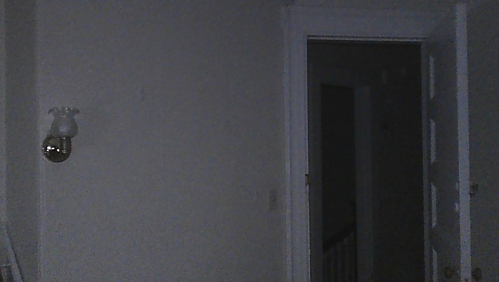
It was a pretty surreal situation.
Luckily, when he found I was awake, he chose to back off and left through the kitchen window.
I called 911 and confirmed that my roommates were safe.
The police and detectives came to the house and conducted an investigation, but in the end, the intruder was never caught.
My roommates and I decided to install a security camera by my window in case he returned2.
To provide a stable power supply for the outdoor camera, I also bought a solar panel.
But since there was no suitable place to install it, I couldn’t use it.
And because it reminded me of that unpleasant memory — the uninvited intruder in my room — I pushed it into a corner and never opened it again.
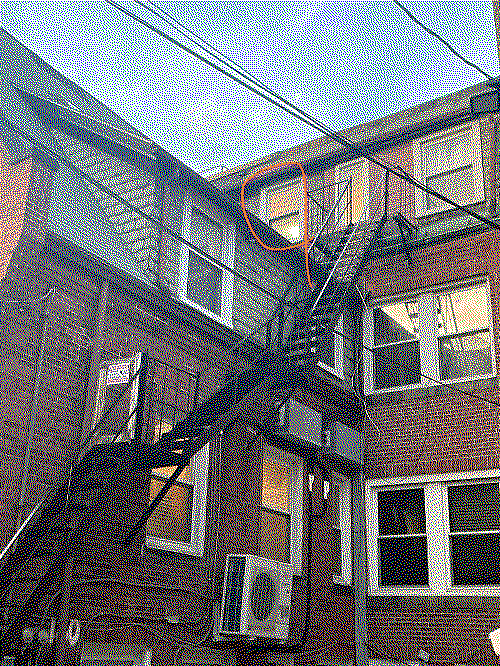
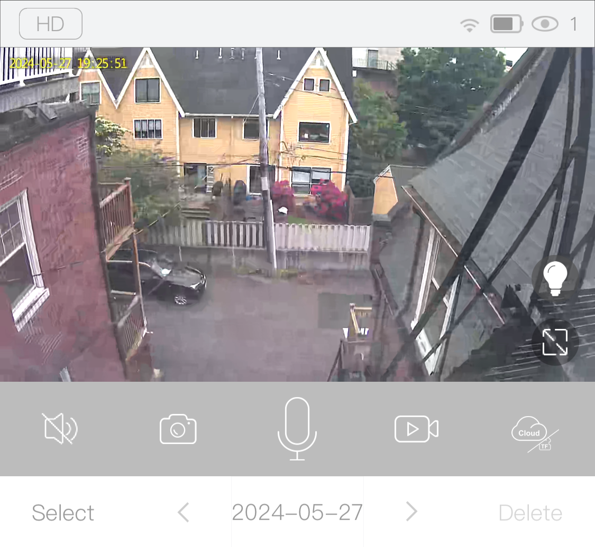
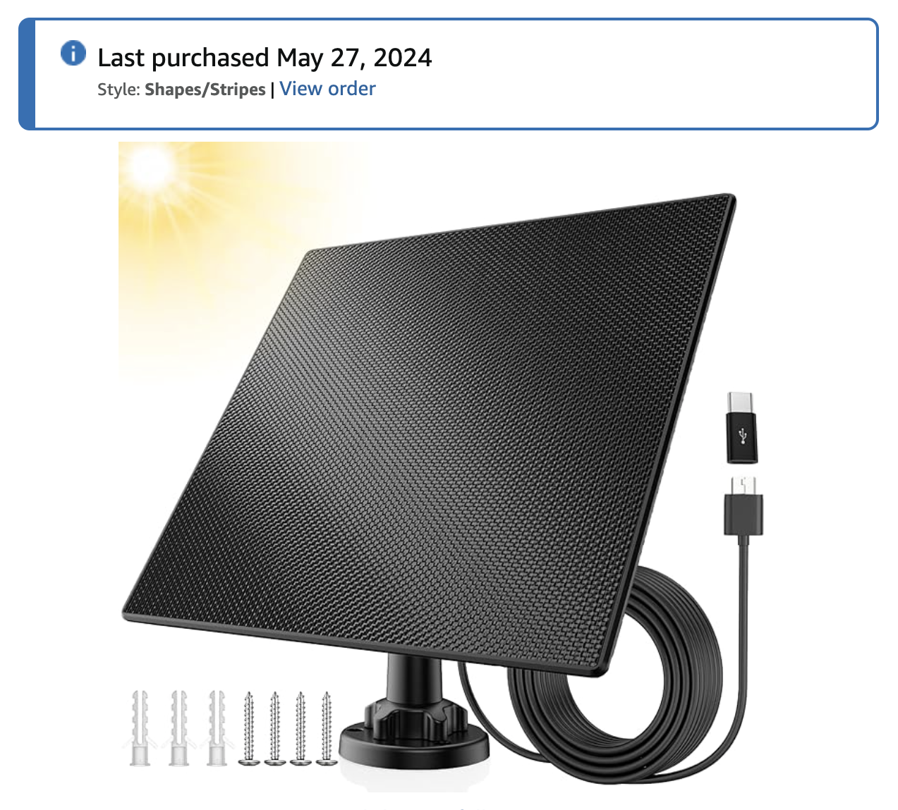
And so, for a year,
my solar panel never got a chance to store the energy of the sun.
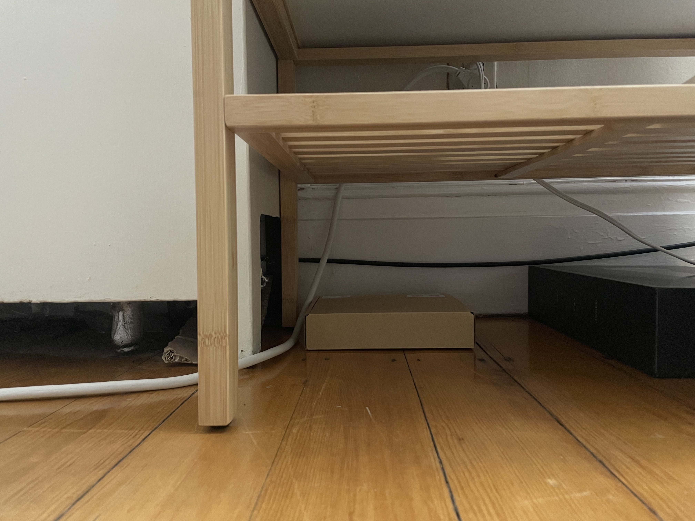
**
A year later, in the summer of June 2025, I took part in the TWA workshop hosted by Ultralight School in New York.
The night before the first workshop, I opened my inbox and found an email from TWA asking us to bring “a physical object related to your Total Work of Art3.”
While looking for what to bring, I discovered my forgotten solar panel tucked away under the furniture.
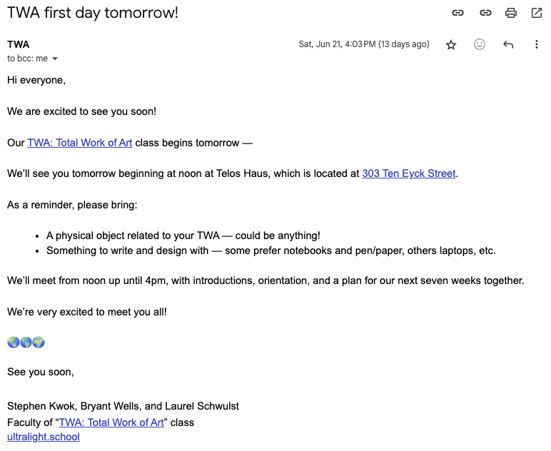
Unlike the summer a year ago, opening it this year brought me a fresh perspective.
Aside from the unpleasant memories, upon reflection, the solar panel itself is quite romantic.
It harnesses the most powerful and brilliant source of light —the sun— and powers things with its energy.
Having been kept in the dark for a year, my solar panel contained no solar energy at all when I opened it at midnight.
So, for the first time, I decided to store the sun’s energy in it.
Living in Boston and needing to catch a bus at 1:30 am to attend the workshop in New York, I hurriedly packed my solar panel and left home.
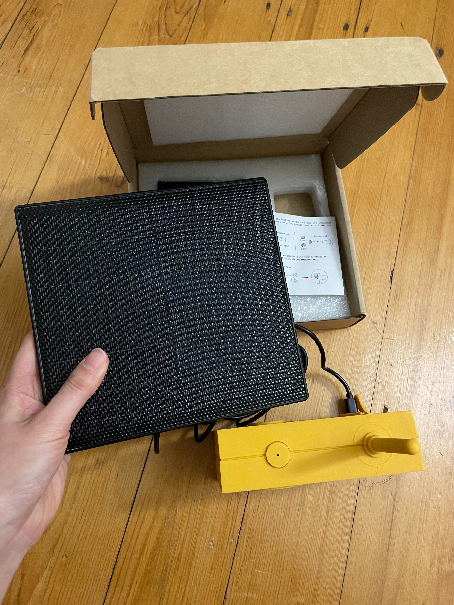
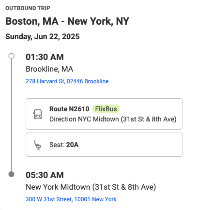
Around 5:30 am, after arriving in New York, the sun slowly began to rise. I hung my solar panel on my bag and wandered around the city, collecting my first sunlight until the workshop began that afternoon.
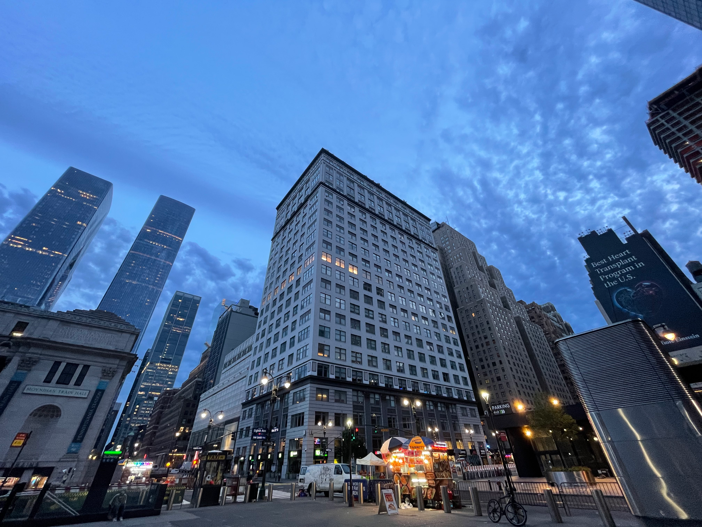
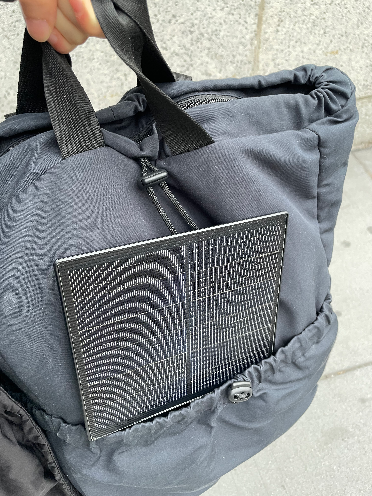
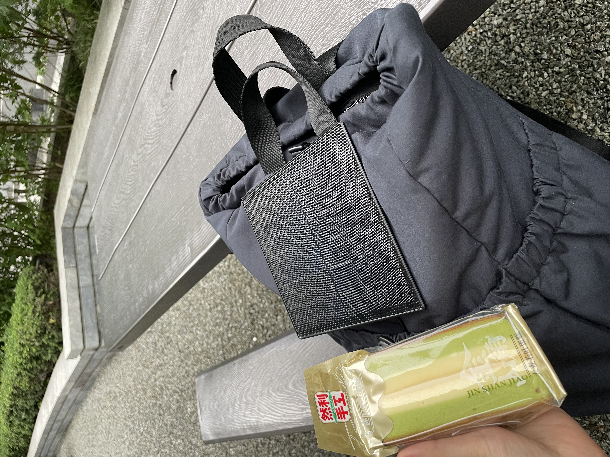

**
That first solar energy was used to power my uncharged radio, enabling me to share music with the TWA community.
But from the next workshop onward, I connected a mini camera to the solar panel and began capturing photos during my journeys between Boston and New York.
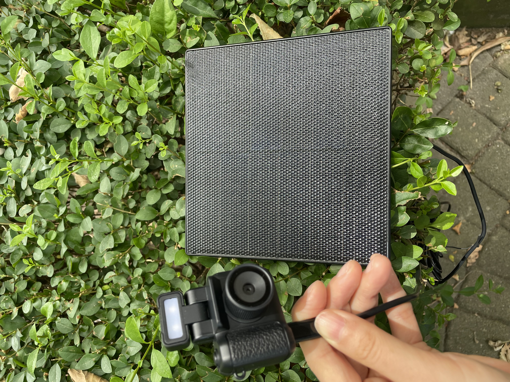
I have archived the photos on my Are.na, and to make viewing them more enjoyable, I created Sunlight TV — which is actually why I built this website in the first place!
The TV is linked directly to my Are.na, so whenever I add new photos, they’re automatically reflected on the TV screen.
Using my smartphone as a remote, I flipped through the TV channels and eventually developed it into a music video4.
The song I chose was Another Day of Sun5 from La La Land.
I used it like a karaoke machine playing the music video while singing along as I worked — I tweaked the lyrics slightly to fit my own story.
In doing so, I was able to let go of the not-so-happy memory with the uninvited intruder, releasing it as something that simply happened in the past.
Also, as I continued to upload new photos, new versions of the music video kept emerging, and to save each of these episodes6, I created Burn my DVD, which extracts the newly generated music videos as video files.
→ If you’d like to try using Sunlight TV and Burn my DVD, please refer to the How to Use section in the right panel!
You can also create music videos using your own public Are.na channels instead of mine.
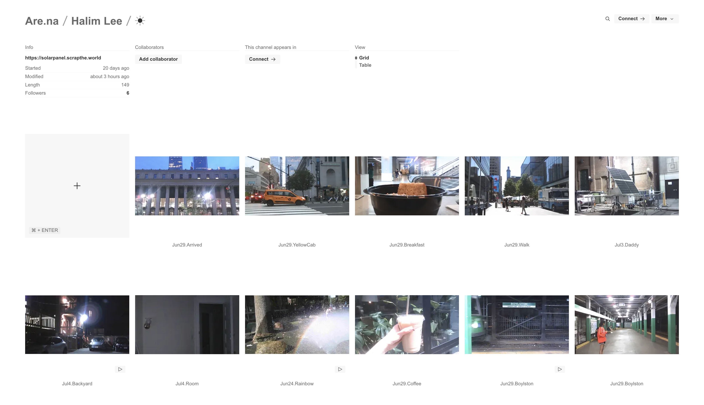
This project is my way of moving forward. The solar panel has always had the ability to store the sun. It was I who left it in the dark for a year, stripping it of that power — and now, I bring it back to the light, capturing the beauty of NYC through the sun’s energy. It’s always been me who defines the value of my ☀︎ panel.
The Story After
This practice turned what could have been an exhausting journey—over ten hours round-trip, twice a week—into into a meaningful and rewarding routine. It made me pay closer attention to the cities I might have otherwise overlooked and allowed me to capture beautiful moments along the way.


For me, solar energy is active energy.
This is energy I can only gain by actively moving.
If I stop moving forward, I lose the power of the sun — the brightest source of light in the universe.
Instead of thinking,
Why is this happening to me? or Commuting is exhausting, or Wouldn’t it be better to just stay home?
I want to enjoy every moment of my life —
and share that joy with others.
**
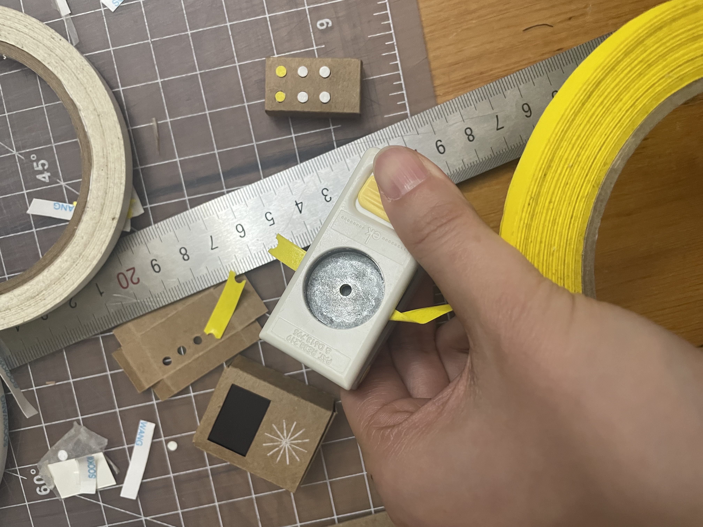